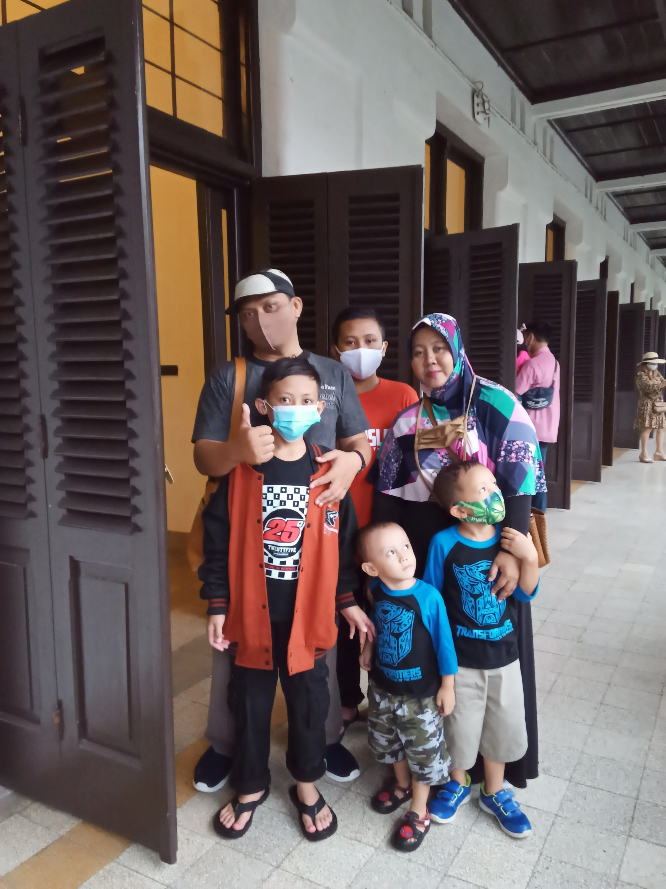

Ada pesan spesial untuk anda

1 Syawal 1447 H
Harta paling berharga adalah sabar. Teman paling setia adalah amal. Ibadah paling indah adalah ikhlas. Identitas paling tinggi adalah iman. Pekerjaan paling berat adalah memaafkan. Selamat Idul Fitri, mohon maaf lahir dan batin.
Minal Aidin Wal Faizin,
Mohon Maaf Lahir dan Batin.
Salam Hangat Dari
Keluarga Besar Kami